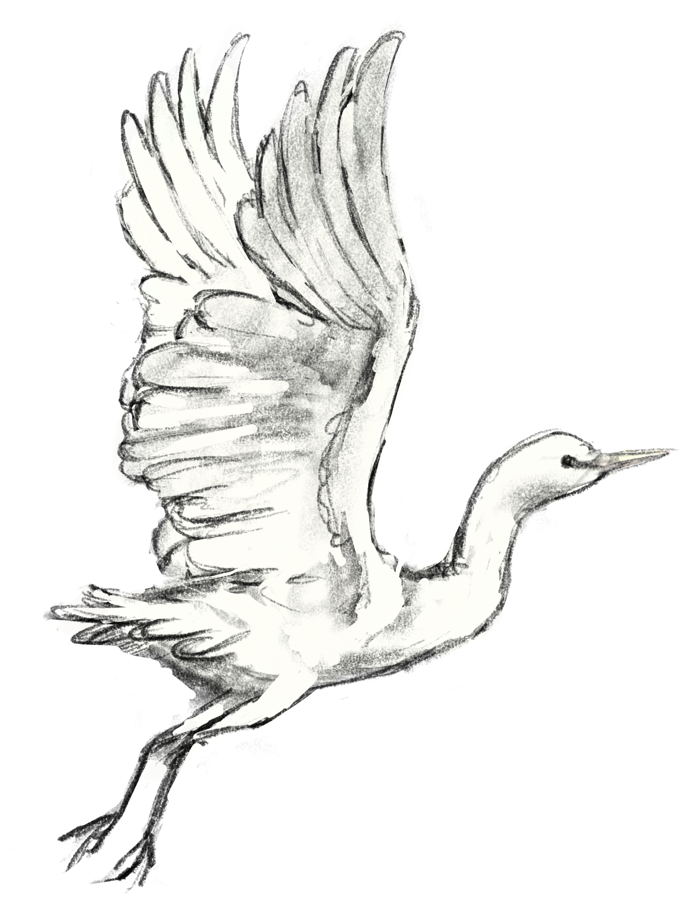
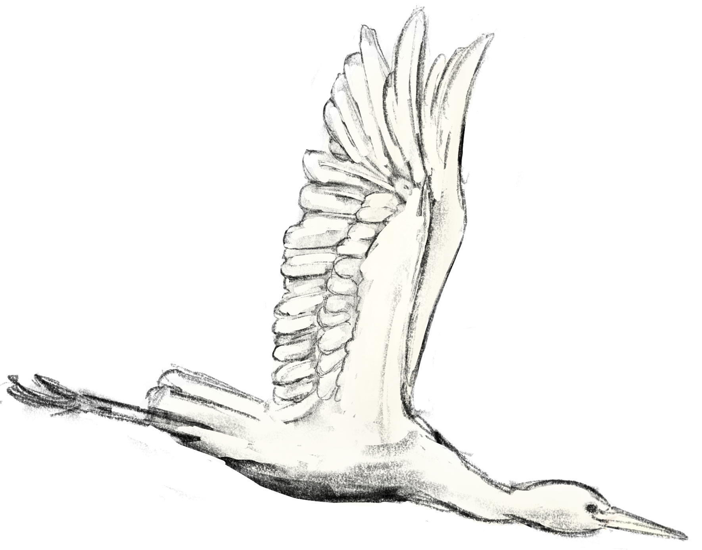
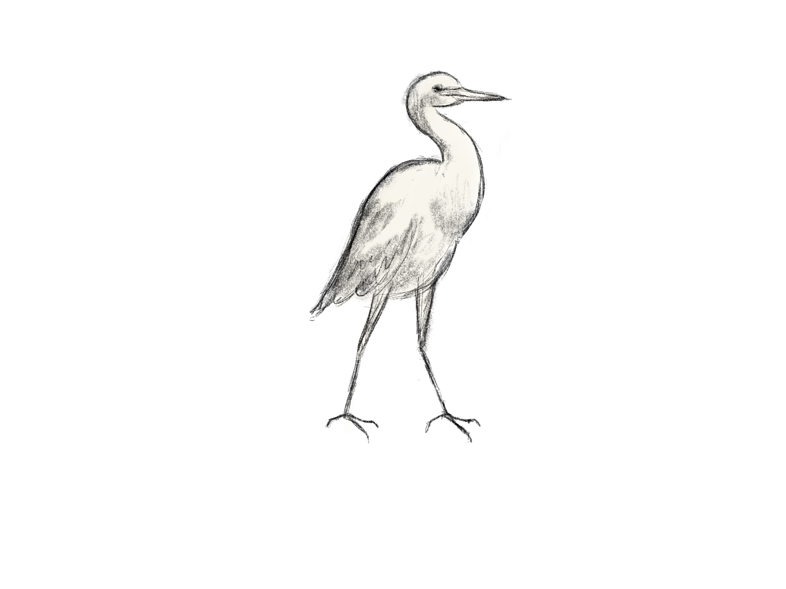

A small white bird that belongs to the heron family. Native to Africa, southern Europe, and parts of Asia, but can be found all around the world due to a symbiotic relationship with livestock.
The relationship between cattle egrets and horses is an example of mutualism, where both parties benefit from the interaction. The cattle egret’s diet is mostly insectivorous, often eating insects stirred up by other animals. These insects can include pests that bother horses, like horseflies. The cattle egret will often perch on the horse’s back, gaining a vantage point and better access to pests.
Phylum: Chordata Class: Aves Order: Ciconiiformes Family: Ardeidae Genus: Bubulcus
  